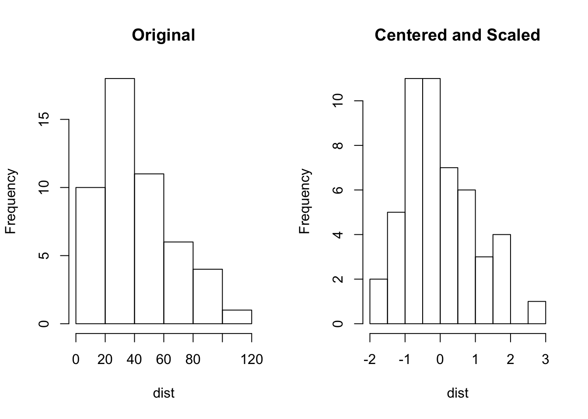
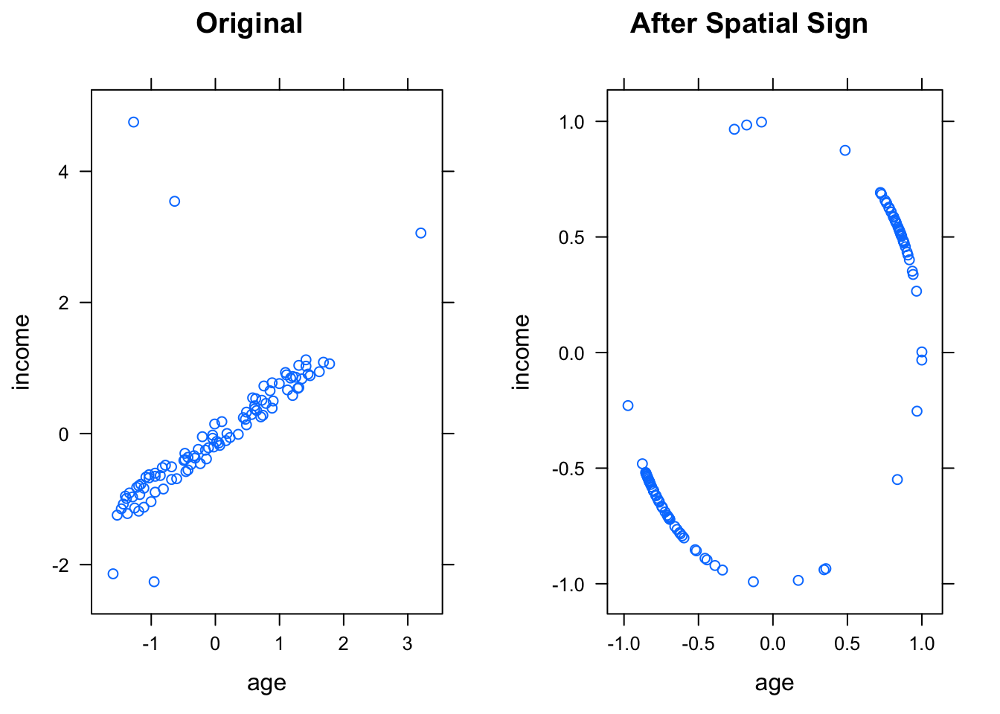
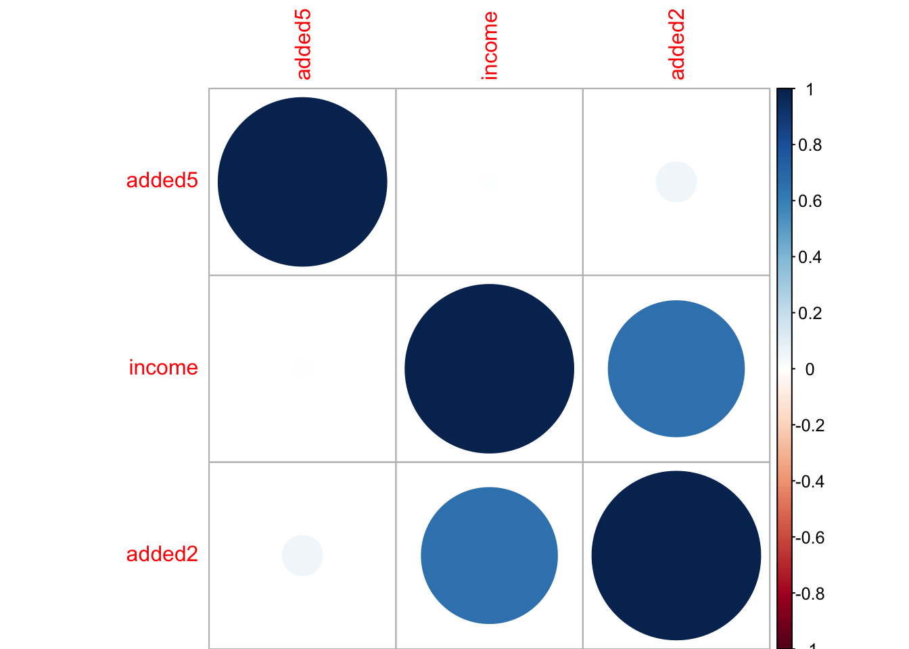

Chapter 5 Data Pre-processing
Many data analysis related books focus on models, algorithms and statistical inferences. However, in practice, raw data is usually not directly used for modeling. Data preprocessing is the process of converting raw data into clean data that is proper for modeling. A model fails for various reasons. One is that the modeler doesn’t correctly preprocess data before modeling. Data preprocessing can significantly impact model results, such as imputing missing value and handling with outliers. So data preprocessing is a very critical part.
In real life, depending on the stage of data cleanup, data has the following types:
- raw data
- Technically correct data
- Data that is proper for the model
- Summarized data
- Data with fixed format
The raw data is the first-hand data that analyst pull from the database, market survey responds from your clients, the experimental results collected by the R & D department, and so on. These data may be very rough, and R sometimes can’t read them directly. The table title could be multi-line, or the format does not meet the requirements:
- Use 50% to represent the percentage rather than 0.5, so R will read it as a character;
- The missing value of the sales is represented by “-” instead of space so that R will treat the variable as character or factor type;
- The data is in a slideshow document, or the spreadsheet is not “.csv” but “.xlsx”
- …
Most of the time, you need to clean the data so that R can import them. Some data format requires a specific package. Technically correct data is the data, after preliminary cleaning or format conversion, that R (or another tool you use) can successfully import it.
Assume we have loaded the data into R with reasonable column names, variable format and so on. That does not mean the data is entirely correct. There may be some observations that do not make sense, such as age is negative, the discount percentage is greater than 1, or data is missing. Depending on the situation, there may be a variety of problems with the data. It is necessary to clean the data before modeling. Moreover, different models have different requirements on the data. For example, some model may require the variables are of consistent; some may be susceptible to outliers or collinearity, some may not be able to handle categorical variables and so on. The modeler has to preprocess the data to make it proper for the specific model.
Sometimes we need to aggregate the data. For example, add up the daily sales to get annual sales of a product at different locations. In customer segmentation, it is common practice to build a profile for each segment. It requires calculating some statistics such as average age, average income, age standard deviation, etc. Data aggregation is also necessary for presentation, or for data visualization.
The final table results for clients need to be in a nicer format than what used in the analysis. Usually, data analysts will take the results from data scientists and adjust the format, such as labels, cell color, highlight. It is important for a data scientist to make sure the results look consistent which makes the next step easier for data analysts.
It is highly recommended to store each step of the data and the R code, making the whole process as repeatable as possible. The R markdown reproducible report will be extremely helpful for that. If the data changes, it is easy to rerun the process. In the remainder of this chapter, we will show the most common data preprocessing methods.
5.1 Centering and Scaling
It is the most straightforward data transformation. It centers and scales a variable to mean 0 and standard deviation 1. It ensures that the criterion for finding linear combinations of the predictors is based on how much variation they explain and therefore improves the numerical stability. Models involving finding linear combinations of the predictors to explain response/predictors variation need data centering and scaling, such as PCA and PLS. You can easily writing code yourself to conduct this transformation. Or the function preProcess() in package caret can apply this transformation to a set of predictors.
#install packages needed
library(caret)
library(e1071)
library(gridExtra)
library(lattice)
library(imputeMissings)
library(RANN)
library(corrplot)
library(nnet)head(cars)## speed dist
## 1 4 2
## 2 4 10
## 3 7 4
## 4 7 22
## 5 8 16
## 6 9 10trans<-preProcess(cars,method=c("center","scale"))
transformed<-predict(trans,cars)
par(mfrow=c(1,2))
hist(cars$dist,main="Original",xlab="dist")
hist(transformed$dist,main="Centered and Scaled",xlab="dist")
Sometimes you only need to scale the variable. For example, if the model adds penalty to the parameter estimates (such as \(L_2\) penalty is ridge regression and \(L_1\) penalty in LASSO), the variables need to have similar scale to ensure a fair variable selection. I am heavy user of this kind of penalty-based model in my work and I used the following quantile transformation:
\[ x_{ij}^{*}=\frac{x_{ij}-quantile(x_{.j},0.01)}{quantile(x_{.j}-0.99)-quantile(x_{-j},0.01)} \]
The reason to use 99% and 1% quantile instead of maximum and minimum values is to resist the impact of outliers.
It is easy to write a function to do it:
qscale<-function(dat){
for (i in 1:ncol(dat)){
up<-quantile(dat[,i],0.99)
low<-quantile(dat[,i],0.01)
diff<-up-low
dat[,i]<-(dat[,i]-low)/diff
}
return(dat)
}In order to illustrate, let’s simulate a data set with two variables: income and age.
set.seed(2015)
income<-sample(seq(50000,150000,by=500),95)
age<-income/2000-10
noise<-round(runif(95)*10,0)
age<-age+noise
income<-c(income,10000,15000,300000,250000,230000)
age<-c(age,30,20,25,35,95)
demo<-data.frame(income,age)
demo$education<-as.factor(sample(c("High School","Bachelor","Master","Doctor"),100,replace = T,prob =c(0.7,0.15,0.12,0.03) ))
summary(demo[,c("income","age")])## income age
## Min. : 10000 Min. :20.00
## 1st Qu.: 76375 1st Qu.:30.25
## Median : 98750 Median :44.25
## Mean :103480 Mean :44.92
## 3rd Qu.:126375 3rd Qu.:56.88
## Max. :300000 Max. :95.00It is clear that income and age are not on the same scale. Now apply the function qscale() on the simulated data demo.
transformed<-qscale(demo[,c("income","age")])
summary(transformed)## income age
## Min. :-0.02101 Min. :-0.01904
## 1st Qu.: 0.26077 1st Qu.: 0.17814
## Median : 0.35576 Median : 0.44746
## Mean : 0.37584 Mean : 0.46044
## 3rd Qu.: 0.47304 3rd Qu.: 0.69033
## Max. : 1.21015 Max. : 1.423755.2 Resolve Skewness
Skewness is defined to be the third standardized central moment. The formula for the sample skewness statistics is: \[ skewness=\frac{\sum(x_{i}+\bar{x})^{3}}{(n-1)v^{3/2}}\] \[v=\frac{\sum(x_{i}=\bar{x})^{2}}{(n-1)}\] Skewness=0 means that the destribution is symmetric, i.e. the probability of falling on either side of the distribution’s mean is equal.
You can easily tell if a distribution is skewed by simple visualization. There are different ways may help to remove skewness such as log, square root or inverse. However it is often difficult to determine from plots which transformation is most appropriate for correcting skewness. The Box-Cox procedure automatically identified a transformation from the family of power transformations that are indexed by a parameter \(\lambda\).
\[ x^{*}=\begin{cases} \begin{array}{c} \frac{x^{\lambda}-1}{\lambda}\\ log(x) \end{array} & \begin{array}{c} if\ \lambda\neq0\\ if\ \lambda=0 \end{array}\end{cases} \]
It is easy to see that this family includes log transformation (\(\lambda=0\)), square transformation (\(\lambda=2\)), square root (\(\lambda=0.5\)), inverse (\(\lambda=-1\)) and others in-between. We can still use function preProcess() in package caret to apply this transformation by chaning the method argument.
(trans<-preProcess(cars,method=c("BoxCox")))## Created from 50 samples and 2 variables
##
## Pre-processing:
## - Box-Cox transformation (2)
## - ignored (0)
##
## Lambda estimates for Box-Cox transformation:
## 1, 0.5The output shows the sample size (50), number of variables (2) and the \(\lambda\) estimates for each variable. After calling the preProcess() function, the predict() method applies the results to a data frame.
transformed<-predict(trans,cars)
par(mfrow=c(1,2))
hist(cars$dist,main="Original",xlab="dist")
hist(transformed$dist,main="After BoxCox Transformation",xlab="dist")An alternative is to use function BoxCoxTrans() in package caret.
(trans<-BoxCoxTrans(cars$dist))## Box-Cox Transformation
##
## 50 data points used to estimate Lambda
##
## Input data summary:
## Min. 1st Qu. Median Mean 3rd Qu. Max.
## 2.00 26.00 36.00 42.98 56.00 120.00
##
## Largest/Smallest: 60
## Sample Skewness: 0.759
##
## Estimated Lambda: 0.5transformed<-predict(trans,cars$dist)
skewness(transformed)## [1] -0.01902765The estimated \(\lambda\) is the same 0.5. Original skewness is 0.759 and after transformation, the skewness is -0.01902765 which is close to 0. You can use function skewness() in package e1071 to get the skewness statistics.
5.3 Resolve Outliers
Even under certain assumptions we can statistically define outliers, it can be hard to define in some situations. You can refer to “Detection of Outliers” for more information. Some models are resistant to outliers (such as tree-based model and support vector machine). If a model is sensitive to outliers (such as linear regression and logistic regression), we can use spatial sign transformation to minimize the problem. It projects the original sample points to the surface of a sphere by:
\[x_{ij}^{*}=\frac{x_{ij}}{\sqrt{\sum_{j=1}^{p}x_{ij}^{2}}}\]
As noted in the book “Applied Predictive Modeling”,
Since the denominator is intended to measure the squared distance to the center of the predictor’s distribution, it is important to center and scale the predictor data prior to using this transformation. Note that, unlike centering or scaling, this manipulation of the predictors transforms them as a group.
We can use spatialSign() function in caret to conduct spatial sign on demo:
trans<-preProcess(demo[,c("income","age")],method=c("center","scale"))
transformed<-predict(trans,demo[,c("income","age")])
transformed2 <- spatialSign(transformed)
transformed2 <- as.data.frame(transformed2)
p1<-xyplot(income ~ age,
data = transformed,
main="Original")
p2<-xyplot(income ~ age,
data = transformed2,
main="After Spatial Sign")
grid.arrange(p1,p2, ncol=2)
5.4 Missing Values
We need a book to fully explicate this topic. Before we decide how to handle missing value, it is important to understand why the values are missing. Do the missing values have information related outcomes? Or are they missing at random? It is not the goal here to illustrate which methods to use in different missing situation. You can refer to Section 3.4 of “Applied Predictive Modeling” for more discussion on that. The objective of this post is to introduce some imputation methods and corresponding application examples using R. Survey statistics has studied the imputation extensively which focuses on making valid inferences. Missing value imputation in predictive modeling is a different problem. Saar-Tsechansky and Provost compared several different methods for applying classification to instance with missing values. “Handling Missing Values when Applying Classification Models”
The following code randomly assigns some missing values to the previous data demo and names the new data set demo_missing.
set.seed(100)
id1<-sample(1:nrow(demo),15)
id2<-sample(1:nrow(demo),10)
id3<-sample(1:nrow(demo),10)
demo_missing<-demo
demo_missing$age[id1]<-NA
demo_missing$income[id2]<-NA
demo_missing$education[id3]<-NA
summary(demo_missing)## income age education
## Min. : 15000 Min. :20.00 Bachelor :13
## 1st Qu.: 77125 1st Qu.:30.25 Doctor : 2
## Median : 98750 Median :44.25 High School:70
## Mean :102811 Mean :44.43 Master : 5
## 3rd Qu.:125250 3rd Qu.:56.25 NA's :10
## Max. :300000 Max. :95.00
## NA's :10 NA's :155.4.1 Impute missing values with median/mode
You can use function impute() under package imputeMissings to impute missing values with mdedian/mode. This method is simple, fast but treats each predictor independently, and may not be accurate.
demo_imp<-impute(demo_missing,method="median/mode")
summary(demo_imp)## income age education
## Min. : 15000 Min. :20.00 Bachelor :13
## 1st Qu.: 79250 1st Qu.:32.19 Doctor : 2
## Median : 98750 Median :44.25 High School:80
## Mean :102405 Mean :44.40 Master : 5
## 3rd Qu.:122875 3rd Qu.:54.50
## Max. :300000 Max. :95.00Note that the median/mode method imputes mode to character vectors and median to numeric and integer vectors.So you can see the 10 missing values for variable “education” are imputed with “High School” since it is the mode.
You can also use function ‘preProcess()’ to attain this.But it only works for numeric variable.
imp<-preProcess(demo_missing[,c("income","age")],method="medianImpute")
demo_imp<-predict(imp,demo_missing[,c("income","age")])
summary(demo_imp)## income age
## Min. : 15000 Min. :20.00
## 1st Qu.: 79250 1st Qu.:32.19
## Median : 98750 Median :44.25
## Mean :102405 Mean :44.40
## 3rd Qu.:122875 3rd Qu.:54.50
## Max. :300000 Max. :95.005.4.2 Impute missing values based on K-nearest neighbors
k-nearest neighbor will find the k closest samples (Euclidian distance) in the training set and impute the mean of those “neighbors”.
imp<-preProcess(demo_missing[,c("income","age")],method="knnImpute",k=2)
demo_imp<-predict(imp,demo_missing[,c("income","age")])## Error in FUN(newX[, i], ...): cannot impute when all predictors are missing in the new data pointNow we get a error saying “cannot impute when all predictors are missing in the new data point”. It is because there is at least one sample with both “income” and “age” missing. We can delete the corresponding row and do it again.
idx<-which(is.na(demo_missing$income)&is.na(demo_missing$age))
imp<-preProcess(demo_missing[-idx,c("income","age")],method="knnImpute",k=2)
demo_imp<-predict(imp,demo_missing[-idx,c("income","age")])
summary(demo_imp)## income age
## Min. :-2.259679 Min. :-1.53784
## 1st Qu.:-0.686725 1st Qu.:-0.88276
## Median :-0.104506 Median :-0.01129
## Mean :-0.006233 Mean : 0.01103
## 3rd Qu.: 0.593512 3rd Qu.: 0.72444
## Max. : 5.074342 Max. : 3.18343The error doesn’t show up this time. This method considers all predictors together but it requires them to be in the same scale since the “euclidian distance” is used to find the neighbours.
5.5 Collinearity
It is probably a technical term that many un-technical people also know. There is an excellent function in corrplot package with the same name corrplot() that can visualize correlation structure of a set of predictors. The function has option to reorder the variables in a way that reveals clusters of highly correlated ones. We add some columns to demo that are correlated.
adddemo<-demo[,-3]
adddemo$added1<-sqrt(demo$age)+10
adddemo$added2<-log(demo$income)+demo$age
adddemo$added2<-log(demo$age)
adddemo$added4<-demo$income/1000+5*demo$age
adddemo$added5<-sin(demo$age)The following command will produce visualization for the correlation matrix of adddemo.
corrplot(cor(adddemo),order="hclust") The size and color of the points are associated with the strength of corresponding correlation. Section 3.5 of “Applied Predictive Modeling” presents a heuristic algorithm to remove minium number of predicitors to ensure all pairwise corelations are below a certain threshold:
The size and color of the points are associated with the strength of corresponding correlation. Section 3.5 of “Applied Predictive Modeling” presents a heuristic algorithm to remove minium number of predicitors to ensure all pairwise corelations are below a certain threshold:
- Calculate the correlation matrix of the predictors.
- Determine the two predictors associated with the largest absolute pairwise correlation (call them predictors A and B).
- Determine the average correlation between A and the other variables. Do the same for predictor B.
- If A has a larger average correlation, remove it; otherwise, remove predictor B.
- Repeat Step 2-4 until no absolute correlations are above the threshold.
The findCorrelation() function in package caret will apaply the above algorithm.
(highCorr<-findCorrelation(cor(adddemo),cutoff=.75))## [1] 5 2 3# remove columns with high correlations
filter_demo<-adddemo[,-highCorr]
# correlation matrix for filtered data
corrplot(cor(filter_demo),order="hclust")
5.6 Sparse Variables
Other than the highly related predictors, predictors with degenerate distributions need to be removed as well. Removing those variables can significant improve some models’ performance and/or stability (such as linear regression and logistic regression but tree based model is impervious to this type of predictors). One extreme example is a variable with single value which is called zero-variance variable.
Similarly those variables with very low frequency of unique values are near-zero variance predictors. How to detect those variables? There are two rules: - The fraction of unique values over the sample size - The ratio of the frequency of the most prevalent value to the frequency of the second most prevalent value. The caret package funciton nearZeroVar() can filter near-zero variance predictors.
#add two variables with low variance
zero_demo<-demo
zero_demo$zero1<-rep(0,nrow(demo))
zero_demo$zero2<-c(1,rep(0,nrow(demo)-1))
# zero1 only has one unique value
# zero2 is a vector with the first element 1 and the rest are 0s
summary(zero_demo)## income age education zero1
## Min. : 10000 Min. :20.00 Bachelor :15 Min. :0
## 1st Qu.: 76375 1st Qu.:30.25 Doctor : 2 1st Qu.:0
## Median : 98750 Median :44.25 High School:77 Median :0
## Mean :103480 Mean :44.92 Master : 6 Mean :0
## 3rd Qu.:126375 3rd Qu.:56.88 3rd Qu.:0
## Max. :300000 Max. :95.00 Max. :0
## zero2
## Min. :0.00
## 1st Qu.:0.00
## Median :0.00
## Mean :0.01
## 3rd Qu.:0.00
## Max. :1.00# the function will return a vector of integers indicating which columns to remove
nearZeroVar(zero_demo,freqCut = 95/5, uniqueCut = 10)## [1] 4 5Note the two arguments in the function freqCut = and uniqueCut =. They are corresponding to the previous two rules.
freqCut: the cutoff for the ratio of the most common value to the second most common valueuniqueCut:the cutoff for the percentage of distinct values out of the number of total samples
5.7 Re-encode Dummy Variables
Sometimes we need to recode categories to smaller bits of information named “dummy variables”. Take the variable “education” in demo for example. It has four categories: “High School”,“Bachelor”,“Master” and “Doctor”. If we recode it to be dummy variables, each category get its own dummy variable that is 0/1 indicator for that category.
For a single categorical variable, we can use function class.ind() in package nnet:
dumVar<-class.ind(demo$education)
head(dumVar)## Bachelor Doctor High School Master
## [1,] 0 0 1 0
## [2,] 0 0 1 0
## [3,] 0 0 1 0
## [4,] 0 0 1 0
## [5,] 0 0 1 0
## [6,] 0 0 1 0If we want to determine encodeings for more than one variables, we can use dummyVars() in caret.
dumMod<-dummyVars(~income+education,
data=demo,
# Remove the variable name from the column name
levelsOnly=T)
predict(dumMod,head(demo))## income Bachelor Doctor High School Master
## 1 56000 0 0 1 0
## 2 133500 0 0 1 0
## 3 79500 0 0 1 0
## 4 53000 0 0 1 0
## 5 63500 0 0 1 0
## 6 84500 0 0 1 0To add some more complexity, we could assume joint effect of income and education. In this case, this will add 4 more columns to the resulted data frame:
dumMod<-dummyVars(~income+education+income:education,
data=demo,
levelsOnly=T)
predict(dumMod,head(demo))## income Bachelor Doctor High School Master income:Bachelor income:Doctor
## 1 56000 0 0 1 0 0 0
## 2 133500 0 0 1 0 0 0
## 3 79500 0 0 1 0 0 0
## 4 53000 0 0 1 0 0 0
## 5 63500 0 0 1 0 0 0
## 6 84500 0 0 1 0 0 0
## income:High School income:Master
## 1 56000 0
## 2 133500 0
## 3 79500 0
## 4 53000 0
## 5 63500 0
## 6 84500 0